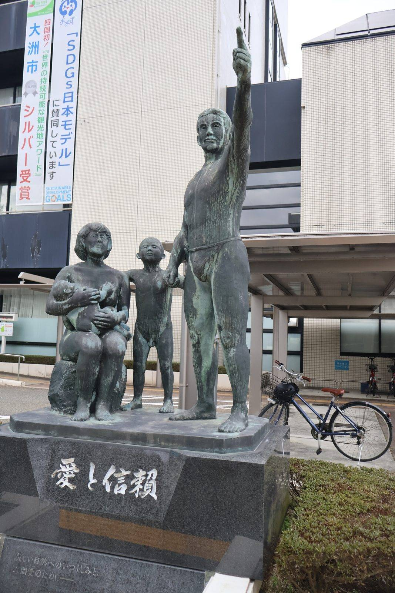

大洲の暮らし ・ 出典: 大洲市「大洲市の子育て支援策一覧」（令和８年度版、R8.7.1現在）/大洲市令和８年度当初予算の概要 ・ 約7分で読める

要点
大洲市の子育て支援サイト「るるる」に、「大洲市の子育て支援策一覧」という１枚もののＰＤＦがある。
結婚したときから新社会人になるまで、ライフステージ別に補助金とサポート体制が並べてある（令和８年７月１日時点）。
全部書き出してみたら、想像よりずっと項目数が多かった。補助金・助成金だけで30近い。
ただ、一覧表は金額しか書いていない。そこで令和８年度当初予算の概要を並べて開き、市がそれぞれにいくら積んでいるかも一緒に見ていくことにした。制度の「本気度」は予算額に出る。
年齢で倍額が変わる設計になっている。29歳以下と30歳以上で30万円の差がつく。
不妊治療だけで４本立てになっているのが目を引く。治療費・先進医療・検査・交通費と、費用の種類ごとに窓口を分けている。
予算では「不妊治療費等補助事業」に622万８千円（うち特定不妊治療費補助金620万円）が計上されている。
交通費の助成が独立して立っているのは、地方ならではだと思う。
生殖補助医療を扱う医療機関は市内に限られるので、松山などへ通う前提の制度になっている。
なお妊婦のための支援給付事業には2,090万４千円が計上されている（うち給付金1,700万円）。
５万円＋５万円で１人あたり10万円なので、170人分の見込みという計算になる。
「子育て環境整備事業」の予算内訳を見ると、若年出産世帯応援事業補助金（35歳以下・30万円）に3,300万円、出産世帯応援事業補助金（36歳以上・20万円）に1,000万円。
単純に割ると110世帯と50世帯で、合わせて160世帯ぶんの見込みになる。
大洲市の出生数は年間185人（令和６年、大洲市統計書）なので、この制度はほぼ全部の出産世帯を想定した規模になっている。
予算で見ると、第２子以降保育料無料化事業が6,753万５千円（保育料4,448万４千円＋給食費2,305万１千円）と大きい。
令和６年度までは第３子以降だった対象を第２子以降に広げたものだ。
子ども医療費は１億6,415万７千円（乳幼児医療費5,794万７千円＋児童医療費１億621万円）。高校生世代までの通院・入院が無償になる。
放課後児童健全育成事業は１億8,328万７千円で、市内に15クラブの放課後児童クラブが開設されている（土曜保育・延長保育対応）。
予算のほとんど（１億6,068万３千円）が支援員の報酬・手当だ。子育て支援の予算は、施設ではなく人に消えていく。
新規の「こども誰でも通園制度」は345万９千円で、八多喜こども園（一般型・専用室と専任保育士あり）と帝京幼稚園（余裕活用型・園の空き定員を使う）の２か所で実施される。
総合教育会議の会議録では、予約が10日前まで必要な点について委員から「もう少し利用しやすい環境を」という意見が出ていた。
給食費については別の記事で詳しく追った。小学校と中学校で財源がまったく違うのがこの２行のポイントになっている。
英検受験料補助金の予算は45万５千円。３級2,500円で割ると182人分、準２級以上の3,000円で割ると151人分という規模感になる。
市内の中学生が約1,000人であることを考えると、受検する生徒の相当割合を見込んだ額だ。
なお高校の授業料については、市の制度ではなく国の制度が令和８年４月から大きく変わっている。
所得制限が撤廃され、公立で年11万8,800円、私立で年45万7,200円の支援を受けられるようになった。この点は大洲高校の定員割れの記事のほうで整理している。
この３つ目が突出している。薬剤師１人に上限360万円。子育て支援策の一覧に載っている補助金の中で、金額としては最大だ。
子育て支援というより医療人材の確保策がこの表に紛れ込んでいる、という見方もできる。
令和８年度予算には新規で看護師インターンシップ支援補助金（30万円）も立っていて、市内の病院でインターンシップを行う看護学生に交通費等を補助する（補助率3/4以内、上限３万円）。
市立大洲病院の人材確保は、それだけ切実だということだと思う。
出産世帯奨学金返還支援事業のほうは予算800万円。最大20万円なので40人分にあたる。
お金の話とは別に、一覧表の下段には相談・預かりの窓口がまとめられている。
最後の「心のケア事業（災害復旧事業）」が、この一覧の中でひとつだけ性格が違う。
平成30年７月豪雨の後に始まった事業が、８年たった令和８年度の子育て支援策一覧にまだ載っている。
災害の影響が子どもの支援体制の中に居残っているということで、これは表を全部書き出さないと気づかなかった。
病児保育はおおくぼこどもクリニックに委託して実施されている。
総合教育会議の会議録によると、事前登録が必要だが空きがあれば当日でも受け入れ可能だという。
予算は年4,056万円規模で、これは民生費の記事で扱った児童福祉費の内訳にも出てくる。
表を全部書き写して思ったのは、この一覧は「使い方」を教えてくれないということだ。
金額と一言説明、担当課名しか載っていない。申請の期限も、必要な書類も、他の制度と併用できるかどうかも書かれていない。
たとえば結婚新生活支援補助金は世帯所得660万円未満という条件があるが、その所得がいつの時点のものかは表からは読めない。
逆に言うと、この表は「自分に関係がありそうな制度を見つけるための地図」として使うのが正しい。
該当しそうなものを見つけたら、担当課名が書いてあるので、そこに電話をかけるところから始まる。表に担当課名が併記してあるのは、そのための設計だと思う。
１枚の表にまとめられていると、大洲市の子育て支援が「結婚前から新社会人まで」切れ目なく設計されていることがよくわかる。
以前取り上げた「子育てしやすい自治体・愛媛県１位」というランキングの中身も、この一覧を見るとかなり具体的に見えてくる。
一方で、項目数の多さは「知らないと使えない制度」が多いということでもある。
おむつ券もそうだし、英検の受験料補助も、不妊治療の交通費助成も、自分から探しにいかないと存在に気づかない。
該当するライフステージが来たら、まずこの１枚を見返すのがよさそうだ。
この記事をサイトに掲載した日: 2026/08/18